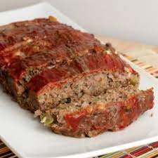

Easy Meatloaf

Need a quick, easy, and delicious meatloaf recipe? Look no further !!
This meatloaf has over 18 grams of protein and 372 calories per serving,
so if you're in need of some protein,definitely consider this great recipe out.
It only takes a little over an hour to make one of these, and the prep time is
quick as well, so if you're in a rush this is definitely a good option.
Ingredients
- 1 1/2 pounds ground beef
- 1 egg
- 1 onion, chopped
- 1 cup milk
- 1 cup dried bread crumbs
- salt and pepper
- 2 tablespoons brown sugar
- 2 tablespoons prepared mustard
- 1/3 cup ketchup
Steps
- Preheat oven to 350 degrees F (175 degrees C)
- Combine the beef, egg, onion, milk, and bread crumbs and season with salt and pepper
- Shape into loaf and place into a lightly greased baking dish
- In a small bowl combine the brown sugar, mustard, and ketchup
- Pour the mixture over the meatloaf
- Bake at at 350 degrees F(175 degrees C) for 1 hour